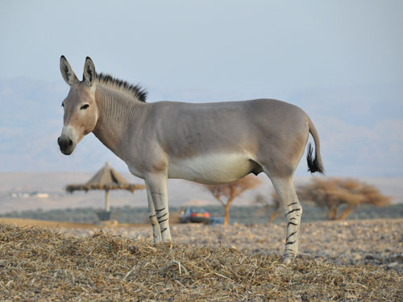
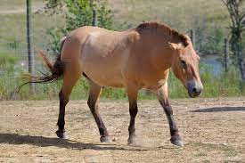
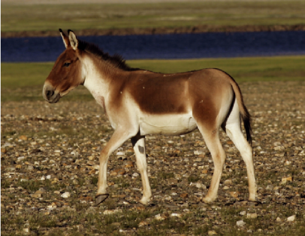

A zebra de Grevy (equus grevyi) é um membro dos equídeos, uma família de mamíferos ungulados de cavalos e animais semelhantes a cavalos. Existem três grupos básicos reconhecidos em equídeos: cavalos, jumentos e zebras, embora todos os equídeos existentes estejam no mesmo gênero de equus.
A equus grevyi é uma das três ou quatro espécies existentes de zebras . As outras espécies existentes são a zebra das planícies (equus quagga) , a zebra da montanha do Cabo (equus zebra) e a zebra da montanha de Hartmann (equus hartmannae) , que são colocadas juntas no subgênero hippotigris. A zebra de Grevy difere das outras duas zebras em suas características primitivas e comportamento diferente.
Possui a mesma forma do corpo de outros equídeos com cabeça e pescoço longos e pernas finas apoiadas em um único dígito na forma de um casco. O pêlo fino é estampado com listras verticais pretas e brancas que são muito mais estreitas do que as da zebra das planícies (equus burchelli) e persistem até acima das patas traseiras, onde ocorre uma divisa padrão. As listras horizontais nas pernas permanecem distintas até os cascos, e a juba alta e ereta também é listrada em um padrão que continua do pescoço. Uma larga faixa preta ao longo das costas é delimitada por branco e é muito distinta. O focinho é uma cor bronzeada com bordas brancas, e as orelhas grandes e arredondadas são listradas nas costas.
| Outros Equinos | ||||
|---|---|---|---|---|
|  |  |
|
 | |
| Equus Africanus | Equus Ferus | Equus Hemionus | Equus Kiang | |